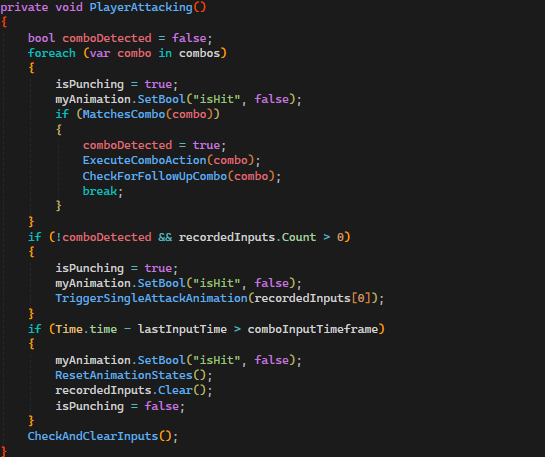
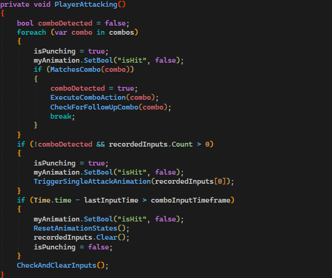

Shura's Gauntlet

Please check out and play the game on itch.io @ShurasGauntlet.itch.io.
Gameplay videoIntroduction
I worked on the fighting implementation and how it executed in the game, creating codes that would connect animations with the players inputs to show flashy combos. I also created behaviour patterns for different bosses the player could face with a focus of making the fights more challenging and complex the more the player progressed in the game.
Project information
Engine: Unity 3D Genre: Fighting , action Project duration: 10 weeks, 2 weeks planning, 1 week whiteboxing My role: Game programmer working with inputsystems, animations and Player & AI behaviour Group: 10 members
My contributions
Fighting controls and mechanics• I created a dynamic fighting system that connected player inputs to lists and dictorinaries of combos and animations. If the combo was in the lists it would be displayed and performed by the player creating an interactive fighting style. See the 4 first pictures.
• Since single attack combos did not feel engaging enough i implemented ways for the player to keep doing combos as long as the follow up inputs were viable combos. See ExecuteFollowUpCombo picture.
• Problems were that if the player just kept attacking the player would be stuck in doing combo loops which made the character freeze. To fix this i created ways for the program to see if the additional inputs were viable, if not viable the attacks would be reset to the start stage and they player would perform attacks all over again. See checkAndClearInputs picture.
• This was possible to implement since I had created a animation controller that responded to the code in a manner which would connected animation and code together for the combos. See animationcontroller picture.
Images and video of fighting and animation output
 



I created an inputsystem that was dynamic depending on what scene the player was in. If the player is in the main hubscene of the world, certain movement controls would be used. If the player then engaged with a boss a new inputsystem would load which loaded in the specific movement controlles the fighting required. Following are the code snippets for the inputsystem.
Images for inputsystem

3. Displaying information about the fighting and tutorial showcase
4. AI behaviour and animations
2.
Images for inputsystem
3. I created a scene in the game which purpose was to showcase the different combos in the game for the player to see. Since this scene would display the fighting combos , I thought it would be appropriate to do so in a flashing way. The scene can seen below in the youtube video. The showcase shows the camera spinning around the main character in the game and showing the specific combo that the player presses. This was done through Unity canvas and code connected with certain animations.
Images and video for how the combos are displayed
4. In a fighting game one of the most important parts are the enemies that the player faces and how they behave and fight. I worked rigidly to create a behaviour for the AI which would make for an interesting opponent. I created states for the AI which determined what their actions would be (Check code snippets below). Since we had multiple opponents I wanted to make every fight interesting in its own way and provide the player with new challenges. The first 2 bosses that the player faces have simple and similar attack patterns. However as the player advances in the game the AI recieves new attacks as shown below in the code snippets. In the pictures you can also see that I created a list of attacks that the AI could perform and determined the next attack animation according to the attack chosen. This made it so that the later bosses and the last boss have a more variety of attacks which makes the challenge much harder for the player.
Images showing different bosses attacks and behaviours aswell as their unique animation controllers


What I would like to improve
If I were to continue on with this project I would like to improve upon the fighting aspect of the game. I do enjoy the fighting but I also think it is not polished enough, there is still much to add in. Such as additional combos, more diverse AI behaviour were their attacks are not as randomized as they are now. I would like the AI to make more calculated descisions such as blocking, sidestepping, choosing certain attacks depending on the player actions. I would also like to improve upon my code writing, as it looks now it is hard for someone not accustomed to the code to understand what is going on. I am a firm believer that more comments in the code is not always the best approach to explaining the code. I want the code to speak for itself and be clean and understandable for the one reading it.What comes next
I am always looking to improve the mechanics I have created for games. I know this fighting system is not perfect, and I would if given more time improve upon the smoothness of the fighting. Another thing I would like to improve is the overall structure of my code to make it as understandable and clean as possible. I wish to work on more projects were my coding will be put to the test. I am learning so much every day and there is still so much more to learn. Please feel free to read more About me and please check out my other Projects for additional info about my contributions so far to game development. I can also be contacted on Tom.ellstrom@gmail.com.